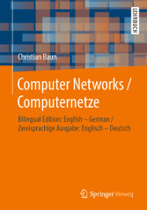
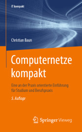

|
|
Jump to the page in German language
|
|


|
Computer networks allow to connect individual computers systems for communication and resource sharing. Communication via computer networks is realized via different protocols of different layers of reference models (OSI reference model, TCP/IP reference model, hybrid reference model). At the beginning of the course, an introduction to the required fundamentals of the computer sciences and computer networks takes place. Next, the protocols and their classification into established reference models is discussed. The main focus of the course is to explain the way, the data is transmitted through the different protocol layers and via different transmission media. The course (lectures, exercises and exam) is held in English language. All slide sets and exercise sheets are available in English and in German language. The content of the English and German slide sets and exercise sheets is identical. A list of technical terms provides this page. The slide sets are the basis for the fifth edition of the German-language book Computernetze kompakt, which was published in autumn 2019 by Springer Vieweg. ISBN: 978-3-662-59896-2 Also, a bilingual (English-German) edition exists Computer Networks / Computernetze, which was published in summer 2019 by Springer Vieweg. ISBN: 978-3-658-26355-3 |
|
The exercises on Wednesday, November 20th, cannot take place because of a business trip. The lecture on Tuesday, November 19th, is not canceled. It will be given by Henry Cocos. |
| Date | Time | Room | Event | Topics |
|---|---|---|---|---|
| 22.10.2019 | 10:00-11:30 | 4-8 | Lecture | Discussion of slide set 1 (slide 1-33) |
| 29.10.2019 | 10:00-11:30 | 4-8 | Lecture | Discussion of slide set 1 (slide 34-43) + Trial Lecture |
| 05.11.2019 | 10:00-11:30 | 4-8 | Lecture | Discussion of slide set 1 (slide 44-50) + slide set 2 (slide 1-20) |
| 12.11.2019 | 10:00-11:30 | 4-8 | Lecture | Discussion of slide set 2 (slide 21-53) |
| 19.11.2019 | 10:00-11:30 | 4-8 | Lecture | Discussion of slide set 3 + slide set 4 (slide 1-22) |
| 26.11.2019 | 10:00-11:30 | 4-8 | Lecture | Discussion of slide set 4 (slide 23-28) + slide set 5 (slide 1-17) |
| 03.12.2019 | 10:00-11:30 | 4-8 | Lecture | ??? |
| 10.12.2019 | 10:00-11:30 | 4-8 | Lecture | ??? |
| 17.12.2019 | 10:00-11:30 | 4-8 | Lecture | Christmas Special |
| 24.12.2019 | Christmas break | |||
| 31.12.2019 | Christmas break | |||
| 07.01.2020 | Christmas break | |||
| 14.01.2020 | 10:00-11:30 | 4-8 | Lecture | ??? |
| 21.01.2020 | 10:00-11:30 | ?-? | Lecture | ??? |
| 28.01.2020 | 10:00-11:30 | 4-8 | Lecture | ??? |
| 04.02.2020 | 10:00-11:30 | 4-8 | Lecture | ??? |
| 11.02.2020 | 10:00-11:30 | 4-8 | Lecture | Q&A session |
| 19.02.2020 | ??? | ??? | Exam | The exam covers all discussed slide sets and exercise sheets |
| 29.05.2020 | ??? | ??? | Exam | The exam covers all discussed slide sets and exercise sheets |
| Slide sets | Topics | ||
|---|---|---|---|
| Slide set 1 | Organisational information, fundamentals of computer networks, protocols and reference models | ||
| Slide set 2 | Physical layer (part 1) | ||
| Slide set 3 | Physical layer (part 2) | ||
| Slide set 4 | Data Link layer (part 1) | ||
| Slide set 5 | Data Link layer (part 2) | ||
| Slide set 6 | Data Link layer (part 3) | ||
| Slide set 7 | Network layer (part 1) | ||
| Slide set 8 | Network layer (part 2) | ||
| Slide set 9 | Transport layer | ||
| Slide set 10 | Application layer | ||
| Slide set 11 | Cryptography (fundamentals, symmetric key cryptography) | ||
| Slide set 12 | Cryptography (asymmetric key cryptography, key exchange, hash functions) | ||
| Slide set 13 | Steganography, copyright traps and digital watermarking | ||
| Exercise sheets | Topics | Solutions | |||
|---|---|---|---|---|---|
| Exercise sheet 1 | Topics of slide set 1 | ||||
| Exercise sheet 2 | Topics of slide set 2 + 3 | ||||
| Exercise sheet 3 | Topics of slide set 4 + 5 + 6 | ||||
| Exercise sheet 4 | Topics of slide set 7 + 8 | ||||
| Exercise sheet 5 | Topics of slide set 9 + 10 | ||||
| Exercise sheet 6 | Topics of slide set 11 + 12 + 13 | ||||
| Semester | Exams | Time limit | University | Sample solutions | ||
|---|---|---|---|---|---|---|
| WS1920 | 90 Minutes | Frankfurt UAS | ||||
| WS1819 | 90 Minuten | Frankfurt UAS | ||||
| WS1718 | 90 Minutes | Frankfurt UAS | ||||
| SS2017 | 90 Minutes | Frankfurt UAS | ||||
| WS1617 | 90 Minutes | Frankfurt UAS | ||||
| SS2016 | 90 Minutes | Frankfurt UAS | ||||
| WS1516 | 90 Minutes | Frankfurt UAS | ||||
| SS2015 | 90 Minutes | Frankfurt UAS | ||||
| WS1415 | 90 Minutes | FH Frankfurt | ||||
| SS2014 | 90 Minutes | FH Frankfurt | ||||
| WS1314 | 90 Minutes | FH Frankfurt | ||||
| SS2012 | 90 Minutes | HS Darmstadt | ||||
| Exercise Sheet | ||
| Network Components |

The best way to reach me is via email: christianbaun@fb2.fra-uas.de
|
Prof. Dr. Christian Baun Frankfurt University of Applied Sciences (1971-2014: Fachhochschule Frankfurt am Main) Faculty of Computer Science and Engineering Last updated: November 26nd 2019 |
|